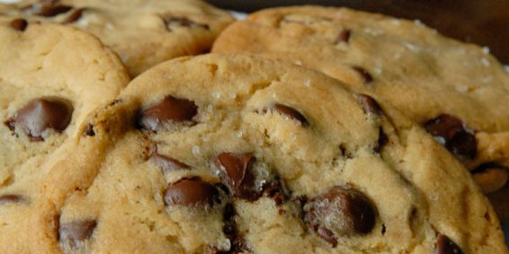

The Cookie Recipe
The Best Chocolate Chip Cookies

Recipe by: My Grandma
Prep Time: 45 Min
INGREDIENTS
- 1 1/2 cup (3 sticks) softened butter,
- 1 cup brown sugar,
- 1 cup granulated sugar,
- 1 Tbl vanilla instant pudding powder,
- 2 Tbl milk,
- 2 Tbl vanilla extract,
- 2 eggs,
- 4 cups all purpose flour,
- 2 tsp baking soda,
- 1/2 tsp salt,
- 4 cups chocolate chips,
- 1 cup chopped walnuts or pecans(optional)
How to make Mama’s Recipe:
- Preheat oven to 350 degrees Beat butter and sugars together until light and fluffy.
- Stir in pudding mix milk and vanilla extract.
- Beat in eggs.
- Add dry ingredients and stir until combined.
- Stir in chocolate chips and nuts.Place 1 1/2 inch balls of dough 2 inches apart on an ungreased cookie sheet.
- Bake 8-10 minutes or until golden brown.
Nutrition Information
Probably bad for you, but who cares. MMMMMM COOKIES!!!! nom nom nom
So, in case you didn't know, your grandma didn't actually make this recipe, it was altered from Open Source Recipe source recipe
Sorry to break the news.